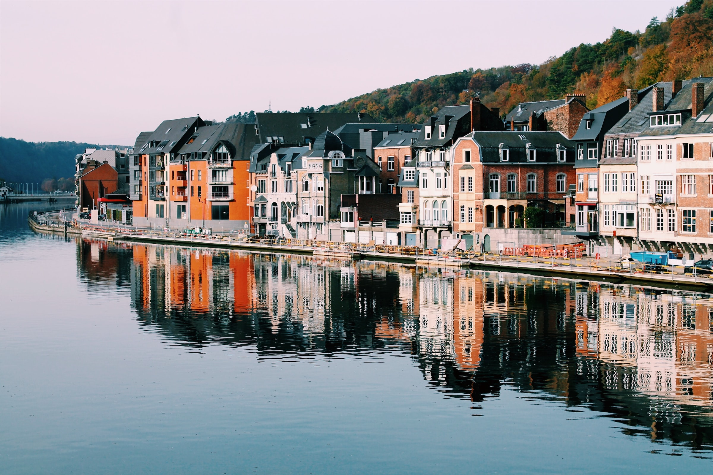

A uma hora ou duas ao sul de Recife, Porto de Galinhas foi criado para o turista não tão radical. Um viajante declarou entusiasmado: "É o que ele não tem que o torna ótimo: nada de trânsito complicado, nada de vida noturna". Explore as piscinas naturais que se formam no recife, dê comida para os peixes que nadam a sua volta, vá de buggy até a romântica Praia Muro Alto.
Um mar de lagoas cristalinas entre dunas de areias brancas. O Parque Nacional dos Lençóis Maranhenses forma um cenário único no mundo e é impossível não ficar deslumbrado com essa paisagem. Localizado no no noroeste do Maranhão e a 250 km da capital São Luís, os Lençóis atraem visitantes de todos os cantos, mas para que a experiência seja a melhor possível, é preciso ficar atento ao calendário.
Há muito o que fazer em Jericoacoara, um dos melhores destinos do Ceará e do Brasil! Praias, dunas, boas pousadas e hotéis, além de um clima maravilhoso atraem cada vez mais turistas. Nesse post preparamos um apanhado com todas as dicas para planejar sua viagem e aproveitar o que Jericoacoara tem de melhor!
Campos do Jordão é um município brasileiro localizado no interior do estado de São Paulo, mais precisamente na Serra da Mantiqueira; faz parte da recém-criada Região Metropolitana do Vale do Paraíba e Litoral Norte, sub-região 2 de Taubaté.